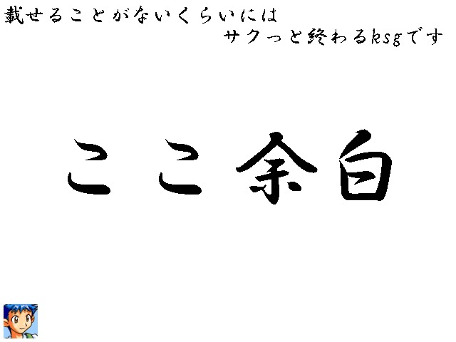

| No.47 締め切り5日前くらいに生えたksg | |
|
 | |
| 作成ツクール：2003s | |
| ジャンル：ksg | |
| 作者名：ナラネーヨ | |
| ＜配信/動画投稿/翻訳＞いいっすよ | |
＜作者のコメント＞No.40をPIAIして 「えっ！？2作品投稿かつこんなにしっかりしたクオリティを！？」 となったのと 祭終盤にどれくらいの人がいるのか気になった という理由で急遽生やしました。 多分アライグマに洗われて溶けるわたがしくらいすぐ終わるksgです ―――――――――――――――――――――――――――――――― 起動方法がわからない場合は フォルダ内にある画像ファイル「★簡単！遊び方説明！★」を 実行ファイルが誤検知で消えてしまう場合は 同じくフォルダ内にある画像ファイル 「★実行ファイルの誤検知対策法★」をご覧ください | |
管理人から と言いつつ結構面白かったりして？ハードルを上げてしまい、すいませんが と言いつつ結構面白かったりして？ハードルを上げてしまい、すいませんが |
|
| ダウンロード(17.7mb) 感想掲示板 | |
| 前の作品 次の作品 / TOPへ戻る | |